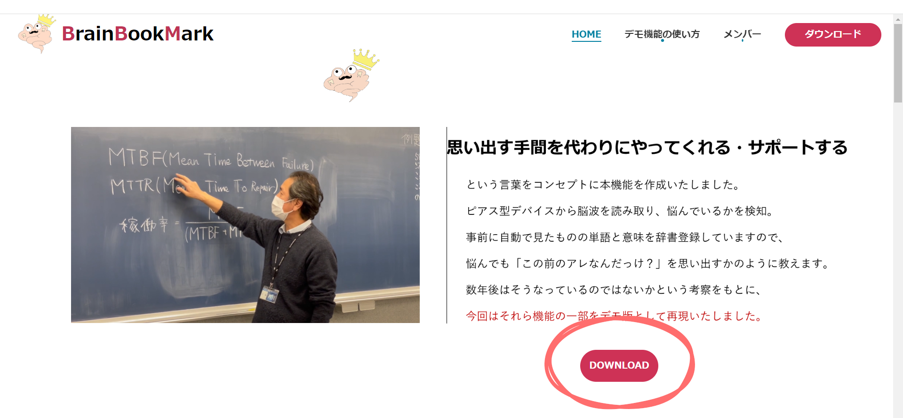
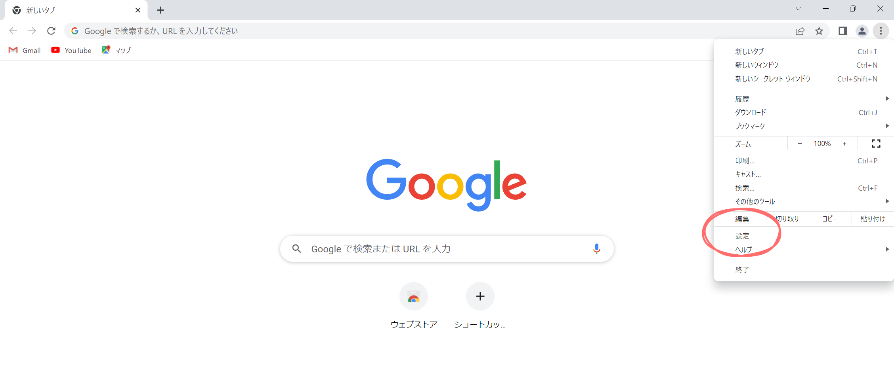
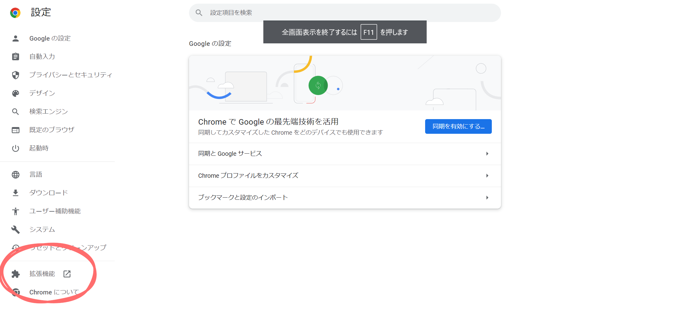
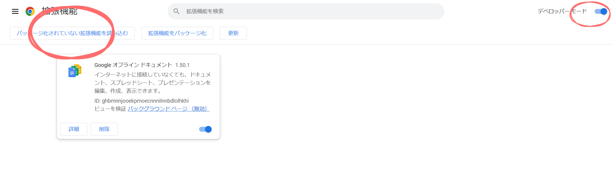
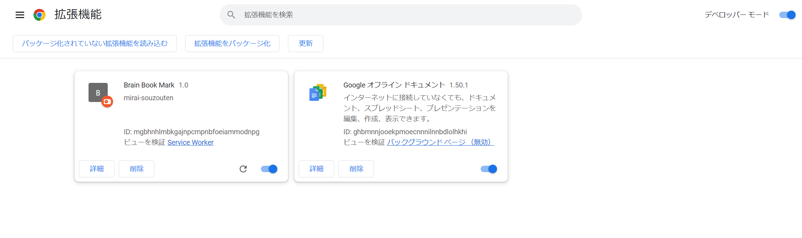
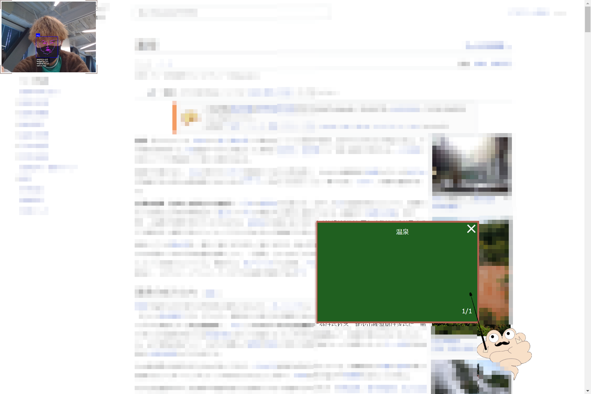
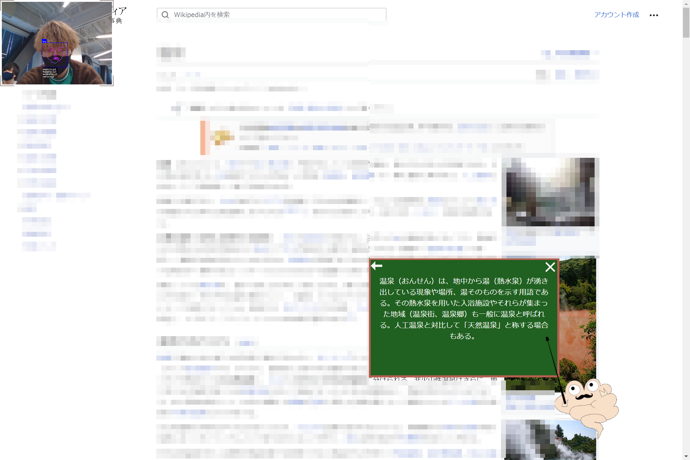

デモ機能概要
GoogleChoromeの拡張機能を用いて、顔認識とマウスの位置取得で悩んでいる内容を取得することに成功しました。
拡張機能ダウンロード
サイトの「ダウンロード」をクリックし、「bbm」をダウンロードしておきます。
拡張機能セットアップ
はじめにGoogleChromeの設定画面を開きます。
次に「拡張機能」をクリックします。
デベロッパーモードがオンになっているのを確認し、「パッケージ化されていない拡張機能を読み込む」をクリックします。サイトからダウンロードした「bbm」を選択します。
拡張機能に追加されました。
実際に使用する
wikipediaで今回のシステムを試用してみます。顔の表情認識で悩んでいるかを判定します。マウスの位置を見ている視点とし、悩んでいる内容を判別します。

システムが学習した内容から検索候補を表示します。
検索候補をクリックするとその内容が表示されます。
